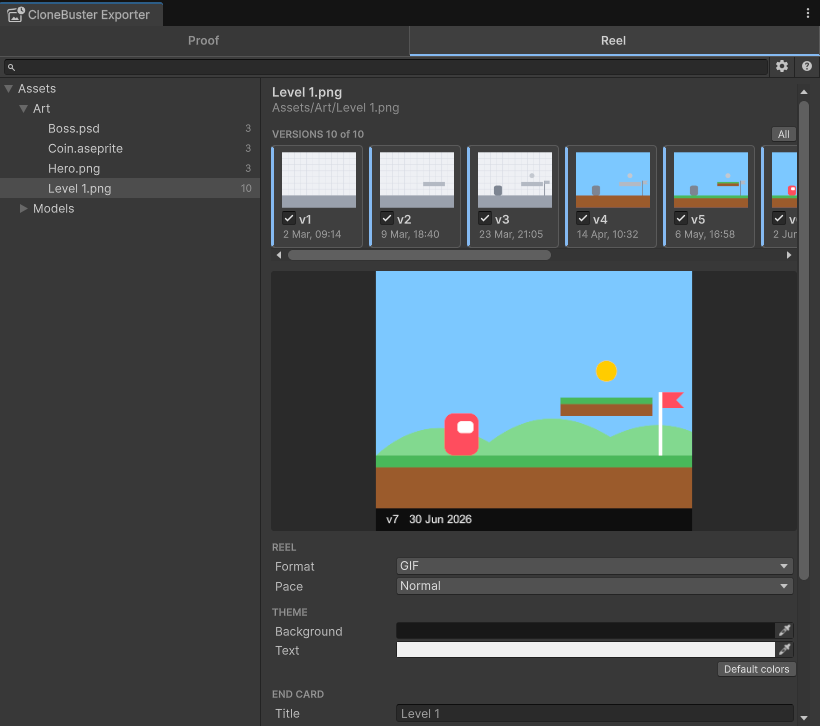
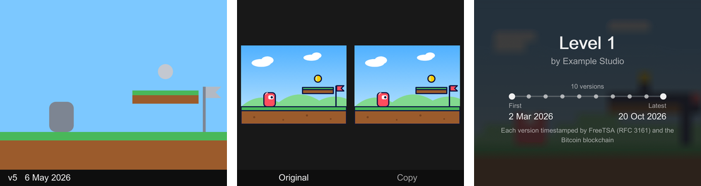

Export a process reel
Export a dated timelapse of how a file evolved, for social media and your store page.
A process reel shows how a file came to be, version by version, each frame dated. Post it to show your work was there first, or to answer someone who accuses you of using AI.
Pick a file and its versions
- Go to Tools > CloneBuster > Exporter.
- Select the Reel tab.
- In the tree, select an image or a model. The tree lists only the files a reel can show, such as PNG, PSD and Aseprite files and models.
- In the pane, select the version cards to leave out of the reel. Every version with an image is in by default.
- Set the options, watch the preview, then select Export reel. CloneBuster writes the reel to a new folder in
CloneBuster Exportsand opens it.

To open a file straight on the Reel tab, select Reel on its Inspector line. A file whose versions were all saved without their image has no reel, so the tree leaves it out. For the formats the reel reads, refer to Supported formats.
Set the reel's options
| Option | Description |
|---|---|
| Format | GIF plays everywhere. MP4 is smaller and suits video platforms; it requires Windows or macOS. |
| Pace | How long each frame stays on screen. |
| Background and Text | The reel's two colors, saved for every reel in the project. |
| Title | The end card's title. Empty uses the file's name. |
| Last line | The last line of the end card: the timestamp authorities by name, Each version independently timestamped, or Timestamped with CloneBuster. The authorities line names the Bitcoin blockchain only once every version in the reel is anchored in it. |
| End on the copy | An image of the copy, shown beside your latest version before the end card. Optional. |
What the reel shows
- One frame per version in the reel, with its number and its date on a band below the image. When every version falls on the same day, the band shows the time too.
- When every version in the reel is 540 pixels or less on its longer side, such as pixel art, it's enlarged by whole multiples with hard edges, so every pixel stays sharp. Other images are fitted to 1080 pixels.
- The latest version stays on screen longer, then the copy appears beside it if you added one.
- An end card over a blurred image of your latest version: the title, your name as the owner, the versions on a timeline from the first date to the latest, and the line you picked.

The size is set for you, and the dates are always shown. The end card shows your name unless the owner is still Unity's placeholder, DefaultCompany.